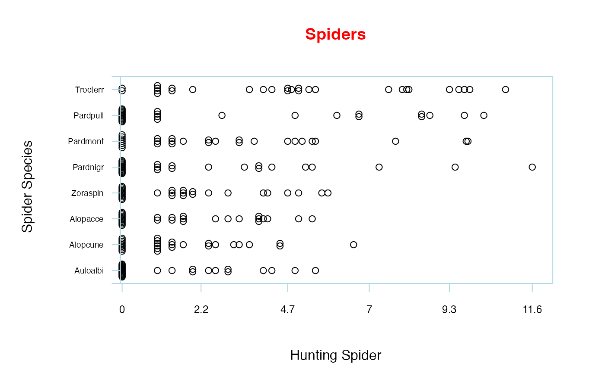

Statistical methods for analysing multivariate abundance data
mvabund-package.RdThis package provides tools for a model-based approach to the analysis of multivariate abundance data in ecology (Warton 2011), where 'abundance' should be interpreted loosely - as well as counts you could have presence/absence, ordinal or biomass (via manyany), etc.
There are graphical methods for exploring the properties of data and the community-environment association, flexible regression methods for estimating and making robust inferences about the community-environment association, 'fourth corner models' to explain environmental response as a function of traits, and diagnostic plots to check the appropriateness of a fitted model (Wang et. al 2012).
There is an emphasis on design-based inferences about these models, e.g. bootstrapping rows of residuals via anova calls, or cross-validation across rows, to make multivariate inferences that are robust to failure of assumptions about correlation. Another emphasis is on presenting diagnostic tools to check assumptions, especially via residual plotting.
Details
The key functions available in this package are the following.
For graphical display of the data:
plot.mvabunddraw a range of plots for Multivariate Abundance Data
boxplot.mvabunddraw a range of plots of Model Formulae for Multivariate Abundance Data
meanvar.plotdraw mean-variance plots for Multivariate Abundance Data
For estimating and displaying Linear Models:
manylmFitting Linear Models for Multivariate Abundance Data
summary.manylmsummarizie Multivariate Linear Model Fits for Abundance Data
anova.manylmobtain ANOVA for Multivariate Linear Model Fits for Abundance Data
plot.manylmplot diagnostics for a
manylmObject
For estimating and displaying Generalized Linear Models:
manyglmfit Generalized Linear Models for Multivariate Abundance Data
summary.manyglmsummarize Multivariate Generalized Linear Model Fits for Abundance Data
anova.manyglmobtain Analysis of Deviance for Multivariate Generalized Linear Model Fits for Abundance Data
plot.manyglmplot diagnostics for a
manyglmObject
Other generic functions like residuals, predict, AIC can be applied to manyglm objects.
For estimating and displaying 'fourth corner models' with species traits as well as environmental predictors:
traitglmpredict abundance using a GLM as a function of traits as well as environmental variables
anova.traitglmobtain Analysis of Deviance for a fourth corner model of abundance
Other generic functions like plot, residuals, predict, AIC can be applied to traitglm objects. Note traitglm can work slowly, as it fits a single big model to vectorised data (then wants to resample it when you call anova.traitglm).
For fitting more flexible models:
manyanysimultaneously fit univariate models to each response variable from 'any' input function
anova.manyanysimultaneously test for a community-level effect, comparing two or more
manyanyobjectsglm1pathfit a path of Generalised Linear Models with L1 ('LASSO') penalties
cv.glm1pathchoose the value of the L1 penalty in a
glm1pathfit by cross-validation
Other generic functions like residuals, predict, AIC can be applied to manyany and glm1path objects. These functions also can be on the slow side, especially if all rare species are included.
For providing a data structure:
Example datasets:
Tasmaniameiobenthic community data from Tasmania. Used to demonstrate test for interaction.
solbergsolberg species counts with a 3-level treatment factor.
spiderhunting spiders counts from different sites.
tikussolberg nematode counts from Tikus island.
antTraitsant counts from Eucalypt forests, with trait measurements.
For more details, see the documentation for any of the individual functions listed above.
References
Brown AM, Warton DI, Andrew NR, Binns M, Cassis G and Gibb H (2014) The fourth corner solution - using species traits to better understand how species traits interact with their environment, Methods in Ecology and Evolution 5, 344-352.
Warton D.I. (2008a). Raw data graphing: an informative but under-utilized tool for the analysis of multivariate abundances. Austral Ecology 33, 290-300.
Warton D.I. (2008b). Penalized normal likelihood and ridge regularization of correlation and covariance matrices. Journal of the American Statistical Association 103, 340-349.
Warton D.I. (2011). Regularized sandwich estimators for analysis of high dimensional data using generalized estimating equations. Biometrics, 67, 116-123.
Warton DI, Shipley B & Hastie T (2015) CATS regression - a model-based approach to studying trait-based community assembly, Methods in Ecology and Evolution 6, 389-398.
Warton D. I., Wright S., and Wang, Y. (2012). Distance-based multivariate analyses confound location and dispersion effects. Methods in Ecology and Evolution, 3, 89-101.
Wang Y., Neuman U., Wright S. and Warton D. I. (2012). mvabund: an R package for model-based analysis of multivariate abundance data. Methods in Ecology and Evolution, 3, 471-473.
Author
David Warton David.Warton@unsw.edu.au, Yi Wang and Ulrike Naumann.
Examples
require(graphics)
## Load the spider dataset:
data(spider)
## Create the mvabund object spiddat:
spiddat <- mvabund(spider$abund)
X <- as.matrix(spider$x)
## Draw a plot of the spider data:
plot(spiddat, col="gray1", n.vars=8, transformation="sqrt",
xlab=c("Hunting Spider"), ylab="Spider Species", scale.lab="s",
t.lab="t", shift=TRUE, fg= "lightblue", col.main="red", main="Spiders")
#> Kicking off BoxPlot sequence
#> Overlapping points were shifted along the y-axis to make them visible.
#>
#>
#> ABOUT TO PLOT THE FUNCTION
#>
#> Only the variables Trocterr, Pardpull, Pardmont, Pardnigr, Zoraspin, Alopacce, Alopcune, Auloalbi were included in the plot
#> (the variables with highest total abundance).

## A mean-variance plot, data organised by year,
## for 1981 and 1983 only, as in Figure 7a of Warton (2008a):
data(tikus)
tikusdat <- mvabund(tikus$abund)
year <- tikus$x[,1]
is81or83 <- year==81 | year==83
meanvar.plot(tikusdat~year,legend=TRUE, subset=is81or83, col=c(1,10))
#> Error in eval(parse(text = variables[1])): object 'year' not found
## Create a formula for multivariate abundance data:
foo <- mvformula( spiddat~X )
#> Error in eval(terms(x)[[2]]): object 'spiddat' not found
## Create a List of Univariate Formulas:
fooUni <- formulaUnimva(spiddat~X)
#> Error in eval(respname): object 'spiddat' not found
fooUniInt <- formulaUnimva(spiddat~X, intercept=TRUE)
#> Error in eval(respname): object 'spiddat' not found
## Find the three variables that best explain the response:
best.r.sq( foo, n.xvars= 3)
#> Error in model.frame(formula = foo, na.action = NULL): object 'foo' not found
## Fit a multivariate linear model:
foo <- mvformula( spiddat~X )
#> Error in eval(terms(x)[[2]]): object 'spiddat' not found
lm.spider <- manylm(foo)
#> Error in model.frame(formula = foo, drop.unused.levels = TRUE): object 'foo' not found
## Plot Diagnostics for a multivariate linear model:
plot(lm.spider,which=1:2,col.main="red",cex=3,overlay=FALSE)
#> Error in plot(lm.spider, which = 1:2, col.main = "red", cex = 3, overlay = FALSE): object 'lm.spider' not found
## Obtain a summary of test statistics using residual resampling:
summary(lm.spider, nBoot=500)
#> Error in summary(lm.spider, nBoot = 500): object 'lm.spider' not found
## Calculate a ANOVA Table:
anova(lm.spider, nBoot=500)
#> Error in anova(lm.spider, nBoot = 500): object 'lm.spider' not found